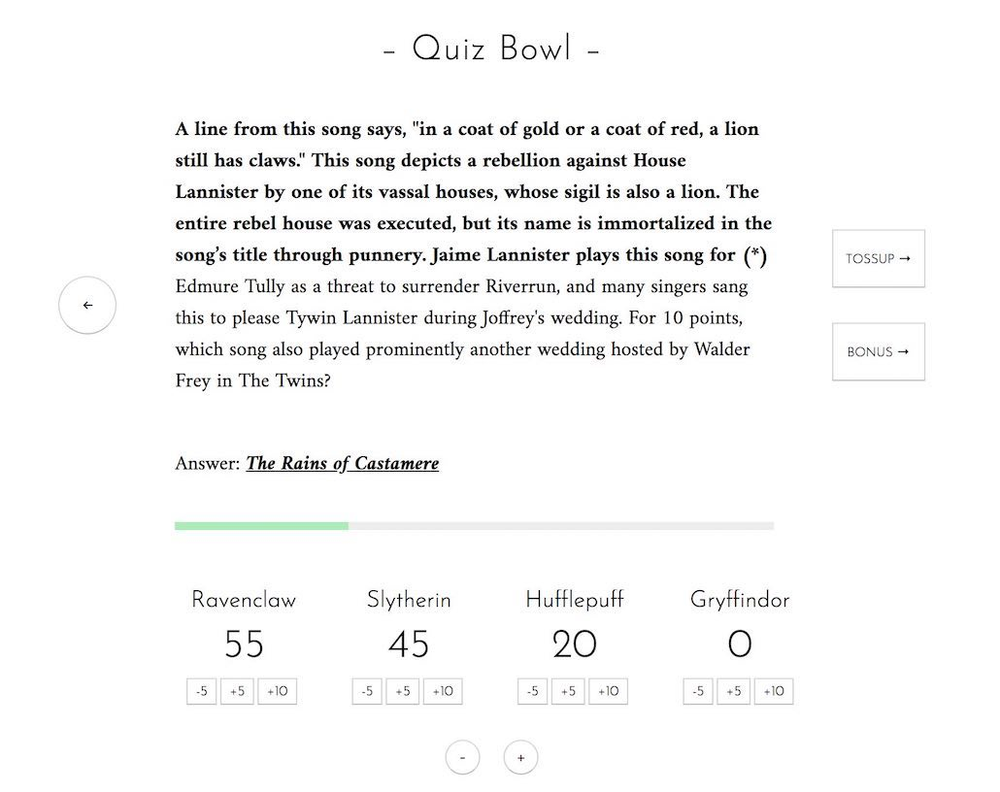

This project, which can be found online here, is a React webapp that serves as a dashboard for quiz bowl moderators. Multiple kinds of questions are read back-to-back during a quiz bowl tournament, and they are often contained in different documents or located on different pages of a giant PDF. Furthermore, the moderator has to keep score during this time, and teams earn different quantities of points depending on the question format and how quickly they answered.
It's a lot to keep track of, especially when things get heated, so I wrote this app with the intent of keeping it all in one place together. Furthermore, it's a webapp, so it's easily accessible online with no login or download required.
For a brief stretch of time in the summer of 2019, I stayed in a rural village in southern China, trapped under the great firewall. I was rereading A Song of Ice and Fire at that time, following the calamity that was Game of Thrones season 8—and in a fit of boredom, I started writing quiz bowl questions based on the series.
I had planned to hold a little quiz bowl tournament with my friends, but quickly realized I'd run into the inconveniences pointed out above. And so, I wrote this little app to help me moderate the tournament.
The interface is divided into two sections: questions and scores. The question display is accompanied by navigation buttons to the side to jump to the next question, whether it's a tossup or a bonus, based on whether a team managed to answer the previous question. The formatting for a tossup and bonus is actually also different; I fully imitated the formatting of traditional question packets so moderators can adapt to this interface faster.
I kept words to a minimum in this design, as symbols are much simpler and more intuitive to read in the heat of a tournament. There is also a back button that can be used to navigate to the previous question. A progress bar (based on the number of tossups seen) also graphically displays where we are in the packet.
As for the score section, it's very easy to add or delete teams simply by pressing the - or + button below. There are little shortcut buttons for adding scores to a team: -5, +5, and +10, for the most common score intervals. Technically, answering a question very fast can also grant a team +15 points, but this happens infrequently enough that pressing +5 and +10 consecutively would serve the same purpose.
However, for more traditional moderators, the score field is actually an editable text box, and hovering over it with a mouse confirms this as such. So, they are welcome to set custom scores for each team whenever they want, and inputs are all restricted to numerical values. This is also true of the team name field—it is fully editable.
Finally, a small touch that's not apparent in the screenshot: clicking each score increment actually leaves a colored impression for a second afterwards. This kind of visual feedback is important to users to confirm that they have indeed performed the action they intended, and allows them to easily evaluate what just happened if they aren't sure they pressed the right button.
Prior to this, I'd held a few impromptu quiz bowl tournaments before, so I had an idea of what it was like being a moderator. I also had a close friend who was very involved in quiz bowl, and frequently bounced ideas back and forth with him about design decisions and possible features to implement.
In fact, it was this friend who pointed out to me that not all tossups are followed immediately by a bonus—it depends on whether any teams successfully answer the tossup! I used to only have a "next" arrow that automatically went to the next bonus, but following this advice, added two separate buttons for either proceeding to the next tossup or bonus question.
I also had the opportunity to playtest this app a few more times with other fans of A Song of Ice and Fire, and had some more takeaways each time. Some of those insights can be found below...
One thing I was thinking was that I was being too restrictive with the format. While most major tournaments run the tossup/bonus format, I didn't need to entangle them as such. They're pretty separate in terms of the "next" button, but I saw less and less reason for the back button to mesh the two together. So, I started thinking about a large refactoring process: allow users to add custom question categories and have a separate next/back system for each one.
Speaking of customization, I wrote the whole application with the idea that users can load their own files into the application, but sadly school started before I could fully implement that interface. Nonetheless, it's definitely one of my first priorities once I get the time to work on this project again. (In case you're wondering, the questions are all in JSON format—parsing from PDFs proved to be far too difficult.)
One final thing I'd like to work on is responsiveness—the spacing can be funny and some of the textboxes don't wrap properly when the window is squished.
Overall, this was a fun little project to work on near the end of summer break, but I'm really excited about the potential it has, despite its somewhat niche use. I also look forward to getting more people to beta test it once the app is a bit more fleshed out.
Once again, this app can be found here. Feel free to contact me with any feature requests!